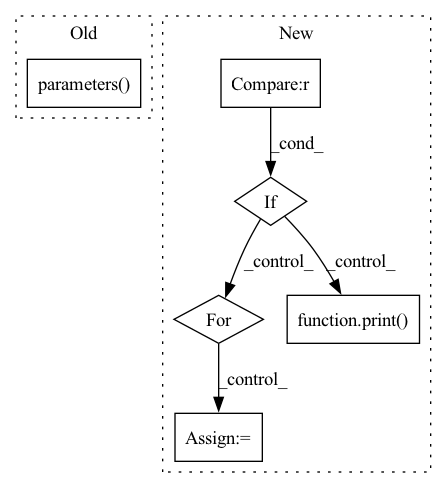

Pattern ID :20397
Before Change
print("Initializing model: {}".format(args.arch))
model = models.init_model(name=args.arch, num_classes=dataset.num_train_pids, loss={"xent"})
print("Model size: {:.5f}M".format(sum(p.numel() for p in model.parameters() )/1000000.0))
criterion = CrossEntropyLabelSmooth(num_classes=dataset.num_train_pids, use_gpu=use_gpu)
optimizer = init_optim(args.optim, model.parameters(), args.lr, args.weight_decay)After Change
best_epoch = 0
print("==> Start training")
if args.fixbase_epoch > 0 :
print("Train classifier for {} epochs while keeping base network frozen".format(args.fixbase_epoch))
for epoch in range(args.fixbase_epoch):
start_train_time = time.time()
train(epoch, model, criterion, optimizer_tmp, trainloader, use_gpu, freeze_bn=True)
train_time += round(time.time() - start_train_time)
del optimizer_tmp
print( "Now open all layers for training")
for epoch in range(start_epoch, args.max_epoch):
start_train_time = time.time()
train(epoch, model, criterion, optimizer, trainloader, use_gpu)In pattern: SUPERPATTERN
Frequency: 3
Non-data size: 6
Instances Fragment ID: 66045039
Project Name: vlsomers/bpbreid
Commit Name: b88d36cd9c8056e15607a40f5d10a9072ab84b22
Time: 2018-07-06
Author: k.zhou@qmul.ac.uk
File Name: train_vidreid_xent.py
M Class Name: AnonimousClass
N Class Name: AnonimousClass
M Method Name: main(0)
N Method Name: main(0)
M Parent Class:
N Parent Class:
M File Name: train_vidreid_xent.py
N File Name: train_vidreid_xent.py
M Start Line: 149
M End Line: 150
N Start Line: 97
N End Line: 198
Before Change
print("Initializing model: {}".format(args.arch))
model = models.init_model(name=args.arch, num_classes=dataset.num_train_pids, loss={"xent"})
print("Model size: {:.5f}M".format(sum(p.numel() for p in model.parameters() )/1000000.0))
criterion = CrossEntropyLabelSmooth(num_classes=dataset.num_train_pids, use_gpu=use_gpu)
optimizer = init_optim(args.optim, model.parameters(), args.lr, args.weight_decay)After Change
best_epoch = 0
print("==> Start training")
if args.fixbase_epoch > 0 :
print( "Train classifier for {} epochs while keeping base network frozen".format(args.fixbase_epoch))
for epoch in range(args.fixbase_epoch):
start_train_time = time.time()
train(epoch, model, criterion, optimizer_tmp, trainloader, use_gpu, freeze_bn=True)
train_time += round(time.time() - start_train_time)
Fragment ID: 66045038
Project Name: vlsomers/bpbreid
Commit Name: b88d36cd9c8056e15607a40f5d10a9072ab84b22
Time: 2018-07-06
Author: k.zhou@qmul.ac.uk
File Name: train_vidreid_xent.py
M Class Name: AnonimousClass
N Class Name: AnonimousClass
M Method Name: main(0)
N Method Name: main(0)
M Parent Class:
N Parent Class:
M File Name: train_vidreid_xent.py
N File Name: train_vidreid_xent.py
M Start Line: 149
M End Line: 150
N Start Line: 97
N End Line: 198
Before Change
else:
print("Number of Layers: " + str(len(list(self.encoderModel.encoder.parameters() ))))
layers_to_freeze = self.encoderModel.encoder.layer[:frozen_layer_count]
for module in layers_to_freeze:After Change
for i, m in enumerate(self.encoderModel.encoder.block):
//Only un-freeze the last n transformer blocks
if i+1 > 24 - frozen_layer_count :
print( str(i) + " Layer")
for parameter in m.parameters():
parameter.requires_grad = True
else:
Fragment ID: 66045045
Project Name: allenai/embeddingrecycling
Commit Name: 34adb3db5524908874d994a6340957a3fa86ab78
Time: 2022-03-23
Author: jonsaadfalcon@gmail.com
File Name: GeneralLinearClassifier.py
M Class Name: CustomBERTModel
N Class Name: CustomBERTModel
M Method Name: __init__(8)
N Method Name: __init__(8)
M Parent Class: nn.Module
N Parent Class: nn.Module
M File Name: GeneralLinearClassifier.py
N File Name: GeneralLinearClassifier.py
M Start Line: 74
M End Line: 83
N Start Line: 39
N End Line: 87
Before Change
print("Initializing model: {}".format(args.arch))
model = models.init_model(name=args.arch, num_classes=dataset.num_train_pids, loss={"xent"}, use_gpu=use_gpu)
print("Model size: {:.5f}M".format(sum(p.numel() for p in model.parameters() )/1000000.0))
criterion = CrossEntropyLabelSmooth(num_classes=dataset.num_train_pids, use_gpu=use_gpu)
optimizer = init_optim(args.optim, model.parameters(), args.lr, args.weight_decay)After Change
best_epoch = 0
print("==> Start training")
if args.fixbase_epoch > 0 :
print( "Train classifier for {} epochs while keeping base network frozen".format(args.fixbase_epoch))
for epoch in range(args.fixbase_epoch):
start_train_time = time.time()
train(epoch, model, criterion, optimizer_tmp, trainloader, use_gpu, freeze_bn=True)
train_time += round(time.time() - start_train_time)
Fragment ID: 66045044
Project Name: vlsomers/bpbreid
Commit Name: b88d36cd9c8056e15607a40f5d10a9072ab84b22
Time: 2018-07-06
Author: k.zhou@qmul.ac.uk
File Name: train_imgreid_xent.py
M Class Name: AnonimousClass
N Class Name: AnonimousClass
M Method Name: main(0)
N Method Name: main(0)
M Parent Class:
N Parent Class:
M File Name: train_imgreid_xent.py
N File Name: train_imgreid_xent.py
M Start Line: 158
M End Line: 159
N Start Line: 105
N End Line: 207